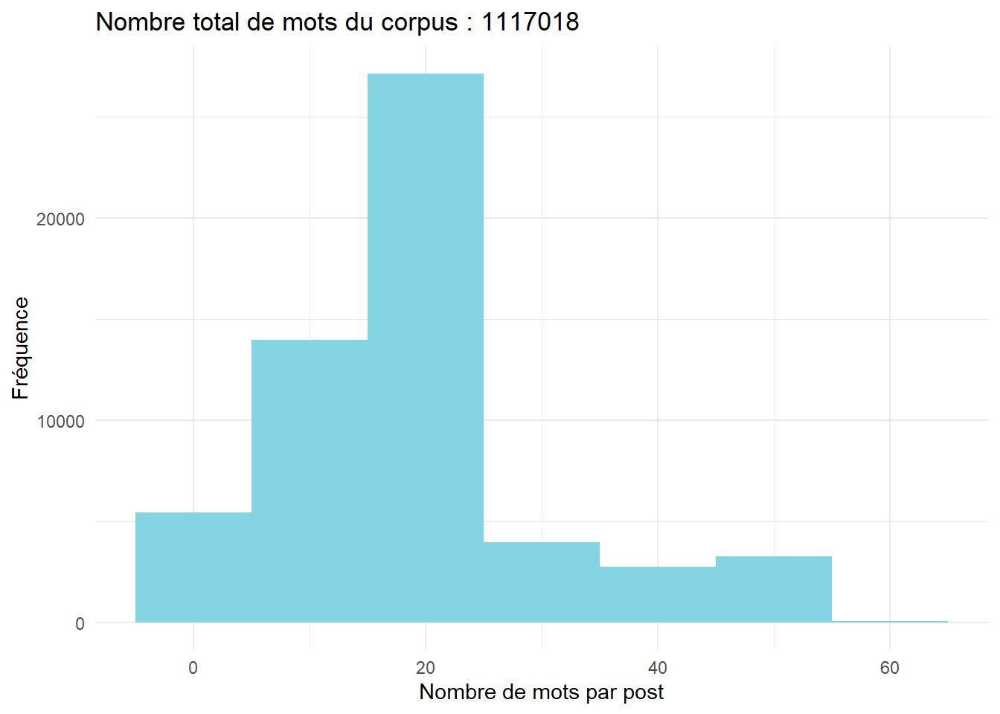

#les librairies du chapîtrelibrary(tidyverse)#accessoires de ggplotlibrary(ggridges)library(ggrepel)library(ggwordcloud)theme_set(theme_minimal()) #NLPlibrary(tokenizers)library(quanteda)library(quanteda.textplots)library(quanteda.textstats )#tableaulibrary(flextable)set_flextable_defaults(font.size =10, theme_fun = theme_vanilla,padding =6,background.color ="#EFEFEF")#paletteslibrary(wesanderson)#names(wes_palettes)col_1<-c("#85D4E3")col_1b<-c("#F4B5BD")col_2<-c <-c("#85D4E3", "#F4B5BD")col_4<-c("#85D4E3", "#F4B5BD", "#9C964A", "#CDC08C")
Objectifs du chapitre :
Avant de se plonger sans l’analyse du lexique on peut étudier le corpus de manière quantitative d’autant plus s’il se distribue dans le temps. La fréquence des textes, leur longueur, la longueur des mots, leur diversité.
Une première manière d’aborder un texte ou un corpus est volumétrique. Quel volume de texte? Quelle longueur ? Combien de mots ? Quelles variations?
A cette fin on utilise le cas des tweets de Donald Trump. Des premiers aux derniers, jusqu’au moment de son bannissement en Janvier 2021, après sa défaite aux élections présidentielles. Chargeons le fichier de données.( on retrouvera la description du fichier en préambule)
Show the code
df <-read_csv("./data/TrumpTwitterArchive01-08-2021.csv")nrow<-nrow(df) #nombre de lignencol<-ncol(df) #nombre de colonnedf$nb_mots<-str_count(df$text, " ")+1# l'astuce : compter les espaces et ajouter 1, pour compter les motssum_mots<-sum(df$nb_mots) #ON COMPTE LE NOMBRE DE MOTS
6.1 Comptons les mots
Il y 56571 tweets et 9 variables et 1.117018^{6} mots cumulés.
On peut vouloir compter le nombre de mots. A cette fin on emploie une fonction de stringr, un package précieux que nous allons étudier de plus dans le chapitres suivant : str_count.
On note immédiatement la bi-modalité de la distribution qui correspond au changement de règle par Twitter en matière de non de caractères utilisés, étendu de 180 à 280.
Show the code
ggplot(df, aes(x=nb_mots))+geom_histogram(fill=col_1, binwidth =10)+labs(title=paste0("Nombre total de mots du corpus : ",sum_mots), x="Nombre de mots par post", y="Fréquence")

La bimodalité provient surement du changement de taille maximum effectué en septembre 2017, le passage de 180 caractères max à 280. On peut le vérifier en examinant cette même distribution - par les courbes de densité - pour chacune des années, avec cette technique rendue fameuse par la pochette de l’album de Joy Division : un graphique en crêtes (ridges plot) avec ggridges.
Le résultat remarquable est que si Trump dans un premier temps exploite cette nouvel fonctionnalité, il en revient avec un phrasé de 20 mots en moyenne, gardant cependant à l’occasion d’autre contenu en 50 mots environ.
Show the code
df$Year<-format(df$date, format ="%Y") #on extrait l'année de la datefoo<- df %>%filter(Year!="2021") #parce qu'il n'y a quelques quelques jours en janvier, le compte a été interrompu vers le 5 janavierggplot(foo,aes(x = nb_mots, y = Year, group = Year)) +geom_density_ridges(scale =4, color="grey90",fill=col_1, alpha=.7)+theme_ridges() +scale_x_continuous(limits =c(1, 60)) +labs(x="Nombre de mots par post",y=NULL)
6.2 La production dans le temps
Examinons le nombre de tweets produit au cours du temps.
On se rappellera qu’après une carrière immobilière menée dans les casinos, le golf et les hôtels, l’appétit médiatique de Trump s’est réalisé dans “the apprentice”, de 2004 à 2015. C’est un pro de la TV, il a une formation de Popstar. Il sera élu en Décembre 2016 pour prendre le pouvoir en Janvier.
Show the code
df$date2<-format(df$date, "%Y-%m-%d")df$date3<-as.POSIXct(df$date2, format ="%Y-%m-%d")df$isRetweet<-as.character(df$isRetweet)foo<-df %>%filter(Year!=2021)%>%group_by(date3, isRetweet)%>%summarise(n=n())## plot time series of tweetsggplot(foo, aes(x=date3, y=n,group=isRetweet))+geom_line(aes(color=isRetweet), alpha=.2)+geom_smooth(aes(color=isRetweet),span=0.5)+scale_x_datetime(date_breaks ="1 year", labels = scales::label_date_short())+labs(y="nombre de tweets par jour", x=NULL)+scale_color_manual(values = col_2)
Show the code
#raf : labeliser avec les dates clés
6.3 Popularité des tweets
Dans ce set de donnée si l’auteur est unique, la réception est multiple, rappelons que près de 90 millions de personnes suivaient Trump. On possède deux indicateurs : le nombre de retweet et de RT.
On s’aperçoit d’un changement de régime, quand l’audience est limitée RT et fac sont fortement corrélés, l’entrée en politique de Trump se caractérise par un changement de régime. La décorrélation peut s’expliquer par l’usage d’agent d’influences, qui retweetent plus qu’ils n’approuvent. Ils contribuent à la décorrélation.
Show the code
foo<-df %>%select(Year, favorites, retweets)%>%filter(!is.na(favorites) & Year!=2021)%>%group_by(Year)%>%summarize(cor(favorites, retweets)) %>%rename(correlation =2)ggplot(foo, aes(x=Year, y=correlation, group=1))+geom_line(size=1,alpha=.8, color=col_1b)+geom_smooth(color=col_1b, size=1.5, fill="grey90")+labs(y="Corrélation entre fav et rt", x=NULL)
df$date2<-format(df$date, "%Y-%m-%d")df$date3<-as.POSIXct(df$date2, format ="%Y-%m-%d")df$isRetweet<-as.character(df$isRetweet)foo<-df %>%filter(Year!=2021)%>%group_by(date3, isRetweet)%>%summarise(n=n())## plot time series of tweetsggplot(foo, aes(x=date3, y=n,group=isRetweet))+geom_line(aes(color=isRetweet), alpha=.2)+geom_smooth(aes(color=isRetweet),span=0.5)+scale_x_datetime(date_breaks ="1 year", labels = scales::label_date_short())+labs(y="nombre de tweets par jour", x=NULL)+scale_color_manual(values = col_2)
Show the code
#raf : labeliser avec les dates clés
6.4 Lisibilité et complexité lexicale
Pour aller un peu plus loin - nous savons désormais que Trump aime une forme courte en 21 mots, et que son expérience de twitter est longue, on peut s’intéresser à des paramètres clés relatifs aux conditions de la réception: les textes sont-ils aisés à lire ? sont-ils sophistiqués ?
Introduisons deux quantifications utiles du texte : la lisibilité et la complexité lexicale. Ce sont des classiques, les critères initiaux de l’analyse quantitative du texte. Ils sont toujours utiles.
6.4.1 Les indices de lisibilité
La lisibilité est une notion ancienne tout autant que sa mesure (par exemple Coleman and Liau (1975)). Elle répond à la question du degré de maîtrise requis pour lire un texte en s’appuyant sur les caractéristiques objectives du texte plutôt que sur sa perception. Il s’agissait donc d’évaluer la complexité d’un texte à partir de deux critères : la complexité des mots capturée par le nombre moyen de syllabes, et la complexité des phrases mesurée par le nombre de mots.
A partir de ces deux paramètres, une multitudes d’indicateurs ont été proposés. Dans l’exemple qui va suivre, on se contente d’un grand classique, le plus ancien, l’indice de Flesch (Flesch 1948) et de ses constituants : le nombre moyen de syllabes par mot et le nombre moyen de mots par phrase.
On les retrouve, avec une autre grande variété, dans le package compagnon de quanteda , quanteda.textstats , qui en fournit des dizaines de variantes.
Show the code
#on sélectionne les tweets originauxfoo<-df %>%filter(isRetweet==FALSE) # on ne prend pas en compte les RT#la fonction de calcul de lisibilitéreadability<-textstat_readability(foo$text, measure =c("Flesch","meanSentenceLength", "meanWordSyllables"),min_sentence_length =3,max_sentence_length =1000) # on joint les donnéesfoo<-cbind(foo,readability[,2:4])#on agrège par annéefoo1<-foo %>%filter(Year!=2021) %>%group_by(Year) %>%summarise(all_tweet=n(),Flesch=mean(Flesch, na.rm=TRUE), SentenceLength=mean(meanSentenceLength, na.rm=TRUE),WordSyllables=mean(meanWordSyllables, na.rm=TRUE)) %>%gather(variable, value, -Year)#visualisationggplot(foo1,aes(x=Year, y=value, group=variable))+geom_line(size=1.2, aes(color=variable), stat="identity")+facet_wrap(vars(variable), scale="free", ncol=1)+labs(title ="Evolution de la lisibilité des tweets de Trump", x=NULL, y=NULL)
Pour aider le lecteur à donner un sens, voici l’abaque proposée par Flesch lui-même.
Flesch
On peut aussi prendre pour références les éléments suivants:
“All Plain English examples in this book score at least 60. Here are the scores of some reading materials I’ve tested. These are average scores of random samples.” ( source ?)
Comics 92
Consumer ads in magazines 82
Reader’s Digest 65
Time 52
Wall Street Journal 43
Harvard Business Review 43
Harvard Law Review 32
Auto insurance policy 10
Trump ne parait pas être sa caricature, non niveau de lisibilité correspond à la Licence. Le Reader’s Digest est beaucoup plus simple, il se situe au dessus de la Harvard Business Review !
6.4.2 Les indices de complexité lexicale
La complexité lexicale rend compte de la diversité du vocabulaire, elle consiste à rapporter le nombre de mot uniques sur le nombre total de mots. La difficulté est que la taille des corpus joue fortement sur cette mesure et que lorsque cette taille est hétérogène, l’indicateur marque plus cette variété que les variations de complexité lexicale.(Tweedie and Baayen 1998)
Dans notre univers trumpesque, ce n’est pas trop sensible, d’autant plus que nous allons moyenner les tweets par période.Notons au passage que si nous moyennons la diversité lexicale de chaque tweet, une autre approche pourrait être de concaténer l’ensemble des tweets d’une période (un jour, une semaine) pour approcher cette variable à une autre échelle, qui couvre l’ensemble des sujets d’intérêt de Trump, que les tweets fractionnent nécessairement. Ce qui en en question dans la mise en pratique n’est pas seulement la question du choix de l’indice mais aussi la définition de l’unité de calcul. La diversité lexicale concerne sans doute plus le discours que la phrase.
On choisit de ne travailler sur deux des multiples indicateurs disponibles :
le CTTR de Caroll qui rapporte le nombre de mots distincts ( V) sur le nombre de mots exprimés. Avec ce critère la diversité maximale est obtenue quand le nombre de mots différents est égal au nombre de mots exprimés.
\[
CTTR = \frac{V}{\sqrt{2N}}
\]
le Mass supposé être moins sensible à la longueur des textes. (voir Torruella et Capsada 2013 ou )
\[
M = \frac{log(n) - log(t)}{log² (n)}
\]
On notera que le problème de la longueur variables des textes dans un corpus produit un biais : les textes seront mécaniquement plus divers que les textes court, ce qui conduit à des approches segmentées, où la mesure de diversité est une moyenne des moyenne pour chacun des segments de texte . On emploie ici le MATTR, dont le MA signifie moyenne mobile (moving average), et le TTR le token/type ratio.
(attention un pb de log dans le calcul)
Show the code
#on retient les tweets de plus de 5 motsfoo<-df %>%filter(nb_mots>10& isRetweet=="FALSE"& Year!=2021)#la fonction de calcul de diversitét1=Sys.time()lexdiv<-tokens(foo$text)%>%textstat_lexdiv(foo$text, measure =c("CTTR", "Maas"), log.base =10,remove_numbers =TRUE, remove_punct =TRUE, remove_symbols =TRUE,remove_hyphens =TRUE) t2=Sys.time()t<- t2-t1t
Time difference of 4.421914 secs
Show the code
#On combine les données et on aggrège sur l'annéefoo<-cbind(foo,lexdiv[,2:3])foo1<-foo %>%group_by(Year) %>%summarise(CTTR=mean(CTTR, na.rm=TRUE), Maas=mean(Maas, na.rm=TRUE)) %>%gather(variable, value, -Year)ggplot(foo1,aes(x=Year, y=value, group=variable))+geom_line(size=1.2, aes(color=variable), stat="identity")+facet_wrap(vars(variable), scale="free", ncol=1)+labs(title ="Evolution de la diversité lexicale des tweets de Trump", x=NULL, y=NULL)
6.5 La mesure de la concentration des termes
Le langage d’un point de vue quantitatif a été caractérisé depuis bien longtemps et il est caractérisé par la loi de Zipf distribution 1949 . Estout est un des premiers à avoir proposé la loi, mais un sténographe fameux en aurait mis en évidence empiriquement avant 1916.
6.5.1 Un débat théorique
Celle-ci s’exprime de la manière suivante : si on classe les termes par ordre de fréquence r, le produit de leur rang par la fréquence est égale à une constante. Autrement dit dans une métrique log, la relation entre rang et fréquence est linéaire et sa pente est négative.
\[f(r).{r}={K} \] Mandelbrot la généralise
les études empiriques
On peut encore débattre de sa signification. Une économie cognitive? Une conséquence de la théorie de l’information ? Un signature pour identifier un discours ## Les lois de distribution du langage
Les lois puissances qui déterminent cet univers et marque dans le registre de l’analyse quantitative une évolution sérieuse. Alors que le modèle dominant de la statistique est la distribution gaussienne, le traitement du langage doit se familiariser avec des distributions puissance.
La régularité statistique nécessite une interprétation, il n’y en a pas qu’une
la loi du moindre de effort qui va aboutir à un débat entre Mandelbrot et Simon.
Economie de l’information, un mot puis deux, puis trois, puis des mots spécifique à un certain registre d’action. Le sens est une affaire d’échelle, du concret au général. Le plus concret est celui des mots scientifiques telles qu’on les retrouve en biologie pour décrire une espèce, en droit pour décrire une propriété, ou en médecine pour désigner une pathologie ou un élément d’anatomie. ( espace de connaissance - épistémologique)
la distribution des locuteurs et de leurs élocution. Dans le langage vernaculaire celui de nos sociabilités, peu de mots sont employés, à mesure qu’on les enregistre ils prennent une place plus importance d’un point de de vue statistique dans les corpus. Les mots rares sont employés par peu de personne. (espace des population - démographique)
6.5.2 Application
Examinons plus concrètement
On reprend la procédure de comptage des mots par groupe, mais sans filtrer sur la fréquence de ces mots. On en obtient n_w mots distincts. En examinant avec plus de détail il y a 5 élément d’information : a ) le trait (feature), c’est à dire ici le mot étudié, b) le nombre de fois où il apparaît dans le corpus, c)le rank qui lui correspond, d)le nombre de documents dans lesquels il apparaît.
Le tableau nous donne les 10 premiers. Il y a 28000 éléments, dont une simple inspection montrera qu’il sont des liens ou d’autres mentions. Il est nécessaire de retraiter le corpus pour éliminer ces éléments. Nous étudierons comment faire dans les chapitres suivants. A ce stade on se contente d’enlever les apax1 dont on ne peut véritablement calculer un rang ( ils ont tous le dernier). Il nous reste 10854 termes.
Show the code
foo<-df %>%filter(isRetweet==FALSE) %>%filter( Year %in%c("2016","2017","2018","2019","2020"))# on ne prend pas en compte les RTtoks<-tokens(foo$text) %>%dfm(remove_punct =TRUE, remove =stopwords("english"))freq_g <-textstat_frequency(toks)%>%as.data.frame() %>%filter(feature!="amp") %>%filter(frequency>1)flextable(head(freq_g, 15))
Mots les plus fréquents
feature
frequency
rank
docfreq
group
great
4,077
1
3,755
all
thank
2,041
3
2,029
all
people
2,040
4
1,895
all
just
1,633
5
1,572
all
now
1,544
6
1,505
all
president
1,466
7
1,322
all
trump
1,424
8
1,307
all
big
1,360
9
1,263
all
news
1,347
10
1,254
all
country
1,274
11
1,233
all
get
1,180
12
1,083
all
fake
1,177
13
1,100
all
new
1,167
14
1,089
all
democrats
1,163
15
1,119
all
many
1,108
16
1,061
all
On peut aussi représenter cela graphiquement. La loi de zipf s’observe jusqu’au 500 premiers mots, ensuite elle suit une autre pente. C’est assez caractéristique, la loi de zipf est incomplète, d’un point de vue empirique il semble qu’il y ait deux lois qui se superposes, la loi des mots communs, et celle des mots singuliers. C’est du moins hypothèse que nous proposons.
Pour être plus qualitatif Une première manière de représenter la diversité du corpus est de représenter les mots les plus fréquents, selon cette fréquente et le ratio fréquence par document. Plus ce dernier est élevé plus il fait du mot un mot spécifique.
6.6 Comptons les mots (toute cette partie est à déplacer au chapitre tokens)
Il est temps de compter les mots, chacun d’entre eux, de se faire une idée une idée de leurs fréquences, de leur distribution.
Souvent on éliminera ceux qui apparaissent de manière occasionnelle, mais aussi ceux qui apparaissent systématiquement dans tous les textes. Une fois ces deux filtrages effectués, le lexique est généralement de l’ordre de 500 à 10000 mots.
Deux outils sont disponibles: les nuages de mots et les lollyplots. Les premiers donnent une idée immédiates, les seconds se prêtent mieux à une analyse systématique
6.6.1 Les nuages de mots
Ils sont devenus extrêmement populaires même si l’effet esthétique est plus important que leur utilité analytique.
Pour l’application on prépare les données avec quanteda : on tokenise et on construit le dfm (pour le détail voir chapitre tokenization), ce qui nous permets notamment d’éliminer la ponctuation et les mots courants (articles, déterminant etc) qui apportent peu de signification.
Show the code
foo<-df %>%filter(isRetweet==FALSE) %>%filter( Year %in%c("2016","2017","2018","2019","2020"))# on ne prend pas en compte les RTtoks<-tokens(foo$text) %>%dfm(remove_punct =TRUE, remove =stopwords("english"))docvars(toks,"Year")<-foo$Year#on se concentre du les termes utilisés 300 fois. foo<-toks %>%dfm_trim(min_termfreq =250, verbose =FALSE)freq <-textstat_frequency(foo)ggplot(freq, aes(label = feature)) +geom_text_wordcloud(aes(size=frequency, color=rank)) +theme_minimal() +scale_size_area(max_size =10) +scale_color_gradient(low = col_1, high = col_1b)
Show the code
ggsave("image/g0.jpg", plot=last_plot(), width =27, height =19, units ="cm")
Et pour faire des comparaisons, entre l’année 2016 qui le conduit à être élu, 2018 une année de midterm et 2020 année de sa défaite, on utilise la même procédure mais on distingue un comptage de fréquence de mot par période. Le ggplot est identique aux précédents mais comprend en plus une géométrie “facet_wrap” qui éclate le nuages de mot selon les 3 périodes étudiées.
Show the code
foo<-toks %>%dfm_group(groups = Year) %>%dfm_trim(min_termfreq =1, verbose =FALSE)url_regex <-"http[s]?://(?:[a-zA-Z]|[0-9]|[$-_@.&+]|[!*\\(\\),]|(?:%[0-9a-fA-F][0-9a-fA-F]))+"#pour compter la fréquence des mots par annéefreq <-textstat_frequency(foo, group =Year) %>%mutate(feature=str_remove_all(feature, url_regex))|>filter(!is.na(feature) & frequency>200 )%>%filter(feature!="amp")set.seed(42)library(ggwordcloud)ggplot(freq, aes(label = feature)) +geom_text_wordcloud(aes(size=frequency, color=rank)) +theme_minimal()+facet_wrap(vars(group)) +scale_size_area(max_size =8)
Show the code
ggsave("./image/g1.jpg", plot=last_plot(), width =27, height =19, units ="cm")
6.7 Conclusion
Nous aurons appris à
Compter le nombre de documents et leurs longueurs
Mesurer la complexité du langage
Mesurer la diversité de son vocabulaire.
A évaluer la concentration des sources
A se donner une première idée de la lexicographie
Ces mesures n’ont ne sens que si elles peuvent être l’objet de comparaison :
De manière interne la comparaison se fait dans dans le temps et à travers des segments. On s’intéresse moins aux niveaux, qu’ à leurs différences.
De manière externe elle requiert un étalonnage. Comparer par rapport au français courant, à un niveau de langue soutenu, ou relâché. L’étalonnage revient à caractériser des types de corpus : presse, écriture savante, réseaux sociaux, publications officielles etc. On ne peut que souhaiter que des comparaisons systématiques soient engagées et compilées pour donner des points de repère quand on étudie un corpus particulier.
Elles participent à un premier niveau d’analyse du texte, en surface, visant à apprécier la dynamique de sa production, à établir les échelles d’analyse, à repérer les éléments structurels.
Le texte est une matière qui a un poids (le nombre de mot), une variété (le nombre d’expressions), une complexité (les règles qui l’organisent). nous venons de nous doter des premiers outils d’analyse, il est temps de passer à la suite.
Coleman, Meri, and T. L. Liau. 1975. “A Computer Readability Formula Designed for Machine Scoring.”Journal of Applied Psychology 60 (2): 283–84. https://doi.org/10.1037/h0076540.
Flesch, Rudolph. 1948. “A New Readability Yardstick.”Journal of Applied Psychology 32 (3): 221–33. https://doi.org/10.1037/h0057532.
Tweedie, Fiona J., and R. Harald Baayen. 1998. “How Variable May a Constant Be? Measures of Lexical Richness in Perspective.”Computers and the Humanities 32: 323–52.
les apax sont les termes qui n’apparaissent qu’une seule fois dans un corpus.↩︎